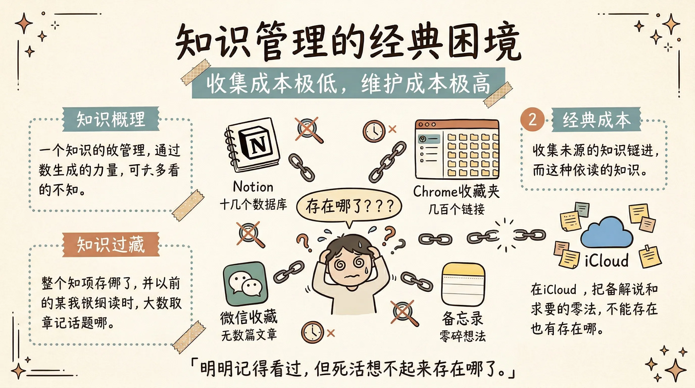
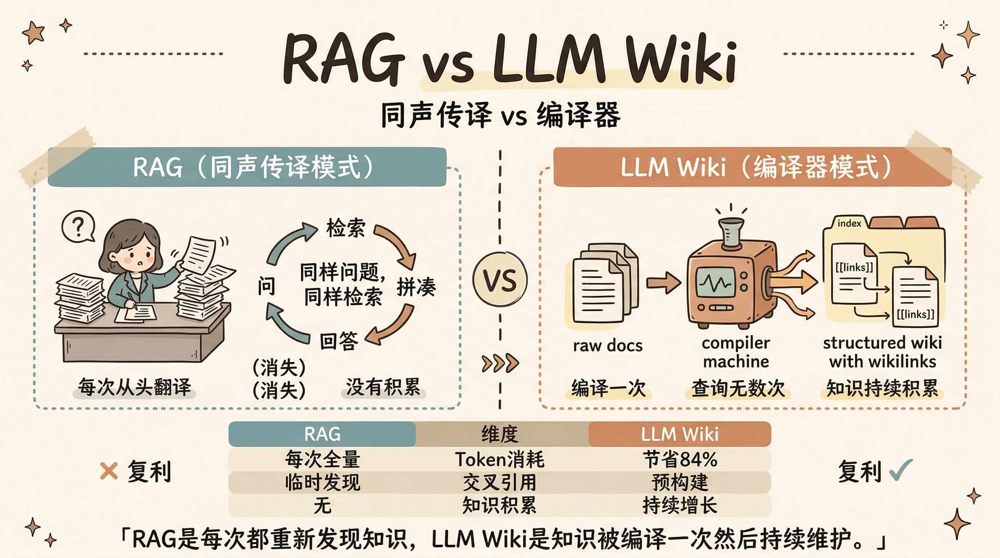
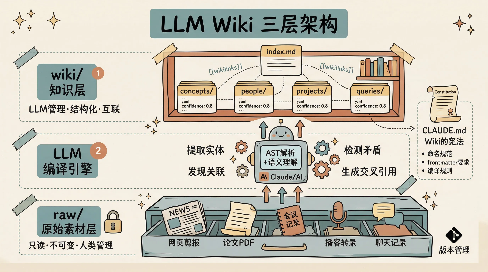
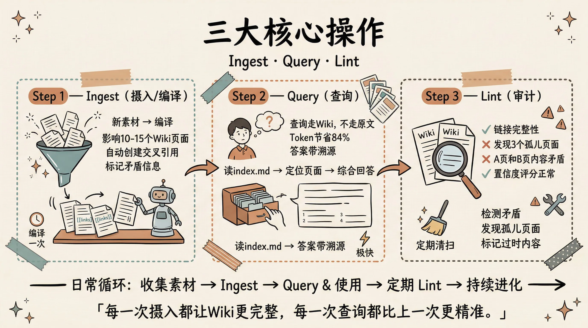
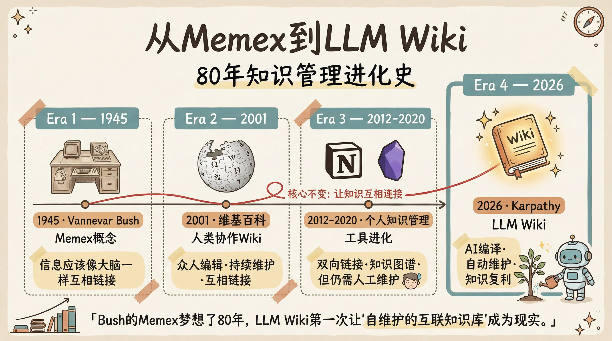

故事是这样的。
前两天刷到 Andrej Karpathy 发了一篇 gist，5000多个star，将近4000个fork，一周之内。
Karpathy 这人不用多介绍了吧，OpenAI 联合创始人，前 Tesla AI 总监，整个深度学习社区大概最会讲课的那个人。他平时很少公开分享自己的工作流，但这次他掏出来一个东西，说这是他自己一直在用的知识管理方法。
名字叫 LLM Wiki。
我看完之后的第一反应是，卧槽，这玩意怎么没人早点说。
我们先聊一个你大概率遇到过的痛。

你有没有这种感觉，收藏夹里躺着几百个链接，Notion里建了十几个数据库，微信收藏里存了无数篇文章，iCloud备忘录里散落着各种零碎想法。每隔一段时间你会雄心勃勃地想「我要整理一下」，然后打开一看，头皮发麻，关掉。
更扎心的是，你明明记得自己之前看过一篇特别好的文章，讲的就是你现在需要的那个东西，但你死活想不起来存在哪了。Notion？微信？还是某个Chrome标签页？
这就是知识管理的经典困境，收集的成本极低，维护的成本极高。人类放弃wiki、放弃笔记本、放弃Notion的原因从来不是「不想用」，而是「维护不动了」。交叉引用要手动建，摘要要手动写，新看了一篇文章发现跟之前某篇有矛盾要手动标注。。。谁受得了？
然后AI出来了，你以为问题解决了对吧？
没有。
现在大多数人用AI处理文档的方式叫RAG，通俗讲就是你把一堆文件丢给AI，每次提问的时候AI从里面检索相关片段，拼凑出一个回答。ChatGPT的文件上传、NotebookLM、各种知识库插件，基本都是这个套路。
能用吗？能用。但Karpathy指出了一个根本性的问题，RAG是「同声传译」模式。每次提问，AI都在从头翻译原始资料。你问同样的问题，它做同样的检索、同样的拼凑。什么都没有沉淀下来。问一个需要综合五篇文档才能回答的复杂问题？AI每次都得重新找到那五篇、重新拼凑、重新推理。
没有积累。没有复利。

LLM Wiki的思路完全不同。
Karpathy的原话是这样的，不要每次都从原始文档里重新检索，而是让AI把原始素材一次性「编译」成一个结构化的Wiki，然后在Wiki上查询。
编译。这个词选得太精准了。
你想想编程里的编译是什么？把人写的源代码，一次性翻译成机器能高效执行的二进制文件。编译一次，运行无数次。LLM Wiki干的就是同样的事，把你那些散乱的原始素材，编译成结构化的、互相链接的、有索引的Markdown Wiki。编译一次，查询无数次。
Karpathy自己的描述特别形象，「Obsidian是IDE，LLM是程序员，Wiki是代码库。」
我觉得这个类比简直绝了。
具体来说，整个系统分三层。

第一层叫 raw，就是你的原始素材。网页剪藏、论文PDF、会议记录、播客转录、个人笔记，什么都可以往里扔。这一层有一个铁律，只读不改。LLM永远不碰你的原始素材，这是你的事实源。
第二层叫 wiki，这是LLM的领地。LLM读完你的原始素材后，会自动生成结构化的Wiki页面，概念页、人物页、项目页、对比分析页，全部用Markdown写，页面之间用wikilink互相链接。LLM完全拥有这一层，你只看不写。
第三层叫 schema，就是一份规范文档，告诉LLM这个Wiki的命名规则、页面格式、工作流程。用Claude Code的话就是CLAUDE.md，用Codex就是AGENTS.md。这是Wiki的「宪法」，让LLM成为一个有纪律的Wiki维护者，而不是随便瞎写的聊天机器人。
然后日常操作就三个动作。

第一个叫 Ingest，编译。你往raw目录扔了一篇新文章，告诉LLM去处理。LLM读完之后不是简单地写个摘要就完事了，它会判断哪些现有的Wiki页面受影响，创建新的概念页面，更新相关的交叉引用，更新总目录，标记矛盾信息。一份新文档通常会影响10到15个Wiki页面。
这是最消耗token的步骤，但只在摄入的时候执行一次。
第二个叫 Query，查询。提问的时候，LLM不再去翻那堆乱七八糟的原始文件了。它先读Wiki的目录index.md，定位到相关的Wiki页面，打开来看，综合分析，生成回答。因为Wiki已经是编译过的、互链的、精炼的内容，查询效率极高，token消耗比RAG少84%。
更骚的是，Karpathy说好的回答本身也应该归档回Wiki。你问了一个很有价值的分析问题，LLM给了你一个精彩的回答，别让它消失在聊天记录里，直接变成Wiki的一个新页面。这样你的探索过程本身也在为知识库增值。
第三个叫 Lint，健康检查。定期让LLM审查Wiki的质量，找矛盾（A页面说X，B页面说相反的话）、找孤儿页面（没有任何页面链接过去的死页面）、找过时内容（原始文件更新了但Wiki还是旧版本）、找缺失页面（被引用但不存在的概念）。
跟代码的lint一模一样，保持代码库的健康。
说到这个，你可能会问，这跟我自己建个Obsidian vault然后用AI插件有什么区别？
区别大了。
传统的Obsidian AI插件，比如Copilot、Smart Connections这些，本质上还是RAG。它们把你的笔记做向量嵌入，提问时检索相关笔记，拼凑回答。知识没有被「编译」过，交叉引用没有被预构建，矛盾没有被预检测。每次查询都是从零开始。
LLM Wiki的核心差异在于，知识在摄入的时候就被处理了，而不是在查询的时候才临时处理。交叉引用已经建好了。矛盾已经标记了。综合分析已经写好了。你查的时候，查的是一个已经被精心维护的知识库，而不是一堆原始文件。
Karpathy用了一个很精辟的对比，RAG是每次都重新发现知识，LLM Wiki是知识被编译一次然后持续维护。
然后他还提到了一个很有意思的工具，叫qmd，是Shopify的CEO Tobi Lütke搞的。当Wiki规模超过大概100页的时候，光靠index.md做导航就不够了，这时候qmd就派上用场。它是一个本地的Markdown搜索引擎，支持三种搜索模式，BM25关键词搜索、向量语义搜索、还有混合搜索加LLM重排序。全部在本地运行，还能作为MCP Server暴露给Claude Code直接调用。
全部在本地。这点很重要。你的知识库、你的搜索、你的LLM推理，全部可以在本地完成。用Ollama跑本地模型的话，一个字节的数据都不会离开你的电脑。
好，理念聊完了，聊聊怎么实际用起来。
现在社区已经有好几个开源实现了。
最简单的是一个叫 second-brain 的项目，一行命令安装，4个skill，带安装向导。跑一个 npx skills add NicholasSpisak/second-brain，然后在Claude Code里执行 /second-brain，它会引导你设置vault的名字、位置、关注领域。设置完之后，用Obsidian Web Clipper剪藏文章到raw目录，然后 /second-brain-ingest 编译，/second-brain-query 查询，/second-brain-lint 做健康检查。四个命令打天下。
功能最全的是 obsidian-wiki，16个skill，支持8种AI Agent（Claude Code、Cursor、Windsurf、Codex、Gemini CLI都行）。除了基础的摄入查询审计之外，它还能把Claude Code的历史对话编译进Wiki，能把聊天记录和会议转录批量导入，能导出交互式HTML知识图谱。
还有一个 llm-wiki 是Claude Code的原生插件，自带qmd搜索引擎自动安装，对Claude Code用户来说最丝滑。
当然你也可以什么框架都不装，裸着来。建两个目录raw和wiki，打开Claude Code，直接告诉它「帮我把raw里的文章整理成结构化的Wiki页面，放到wiki目录，每个页面带YAML frontmatter，页面之间用wikilink互链，维护一个index.md做总目录」。完事了。用Obsidian打开这个目录就能浏览。
Karpathy自己在gist的最后说了一段我觉得特别重要的话。他说这篇文档故意写得很抽象，描述的是理念而不是具体实现。目录结构、命名规范、页面格式、工具链，全部取决于你的领域和偏好。正确用法是把这篇文档丢给你的LLM agent，一起协作出适合你的版本。
说白了。。。不对，坦率的讲，这东西的精髓不在于任何一个具体的工具或框架，而在于这个模式本身，让AI成为你的知识管理员，把「每次从零检索」变成「增量编译加持续积累」。
但也得说说局限。
第一，index.md会撑爆。超过大概100到150页之后，光靠一个目录文件做导航就不够了，得引入qmd这种搜索引擎，本质上又回到了某种形式的检索。
第二，幻觉传染。LLM编译的时候如果编造了一个事实，这个错误会被后续的摄入当成已有知识来引用，形成自我强化的错误循环。目前没有自动化的解决方案，只能靠人工抽查和lint来兜底。
第三，引用粒度。只能追溯到文件级别，没法精确到具体段落。你知道某个知识点来自哪篇文章，但不知道来自哪一段。
第四，token成本。每次摄入影响10到15个页面的全量读写，大规模使用的实际成本没有公开基准。
这些都是实打实的问题，不是能靠「未来会解决」一笔带过的。
但即便有这些局限，我觉得LLM Wiki这个模式代表的方向是对的。
Karpathy在文章末尾提到了 Vannevar Bush，就是1945年提出Memex概念的那个人。Memex是一个私人的、精选的知识存储，文档之间有关联路径。Bush的愿景其实比后来互联网实际变成的样子更接近LLM Wiki，私有的、主动策展的、连接本身和文档一样有价值。

Bush当年没法解决的问题是，谁来做维护？
八十年过去了，LLM解决了。
人类放弃知识库从来不是因为不想维护，而是因为维护负担增长得比价值快。LLM不会无聊，不会忘记更新交叉引用，一次能碰15个文件。维护成本接近于零的时候，知识库终于有可能真正「活」下来了。
你想想，一个持续积累了几年的、被AI精心维护的个人知识库，那是什么概念？不是散落在各处的碎片，不是每次都从零检索的RAG，而是一座有结构、有索引、有交叉引用、会自我检查矛盾的知识图谱。你的第二个大脑，但这次是真的。
大时代啊，朋友们。